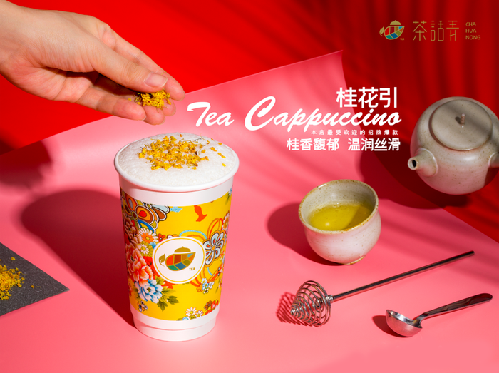

热门TOP7
- 1 桂花引
- 2 南山烟雨
- 3 魅色拿铁
- 4 桂花米酿
- 5 梅占摇红
- 6 初心乌龙
- 7 莓雪芝音
茶话弄诞生于十三朝古都西安，在汉唐雅韵中采撷一味古典，取江南里弄几分诗意柔美，将以茗会友的茶道传统和时尚趣味的闺蜜文化相结合，于4700多年的人类饮茶历史上，寻求“茶里话间·闺心弄见”的别致雅趣。他们寻访全球优质茶源，秉承中茶西做的创意理念，将芝士牛奶与天然茶香融合，让繁复的中式花纹与西方艺术碰撞，打造一个新中式茶饮文化传播空间。
茶话弄目前在西安已开有四家直营店，每家店的风格都各不一样，但是有一个共同之处，就是不变的“中国元素”！门店的内部装饰，他们的茶杯也特别设计了充满中式风格的画作，让这里出品的每一杯茶，除了拥有令人难忘的好喝口感，还有着让人记忆深刻的西安符号。

招牌产品“桂花引”，一年销量超过10万杯。精选专供版的桂花乌龙，用雀巢鲜奶以及小麦胚芽精心调制而成。抿一口丹桂飘香，空气中若有若无的香气，总能轻易地把你带回到童年弄堂里，那棵老桂花树下。时光就这样在唇齿中，慢慢柔软着。
“魅色拿铁”也是这里的当红产品，必喝的茶拿铁系列之一。斯里兰卡红茶茶底的口感清爽，加上新鲜的奶油雪顶，调和出的丝滑口感在口中缠绕，香醇柔滑、绵密温润，号称“撩着吃的奶茶”。 再加上碧根果碎，增添坚果香气的同时使颗粒感更加丰富。
南山烟雨与桂花引有相似之处，都是口感清爽的奶茶系列，虽然更甜一些但味道依然不会腻而且清新十足，比桂花引多了一丝麦芽发酵的香气，可以品尝到更细腻的茶香味。

“来这里魅色拿铁是必须要点的，小姐姐说这款去冰的口感最好，上层的芝士奶油特别香醇不甜不腻，配上碧根果碎真的绝了，果然不失所望，下层的茶冰冰凉凉，一口喝下去有明显的香气。”
“大名鼎鼎的桂花引,15RMB,桂花乌龙茶底,官方号称热量只有半杯酸奶那么多,减肥的姐妹可以放心大胆的来一杯了。是淡淡的桂花香味,现在用的是第三代研发的茶底。”